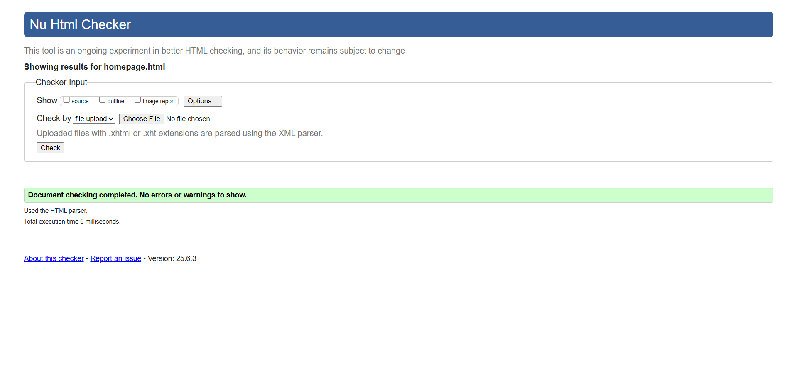
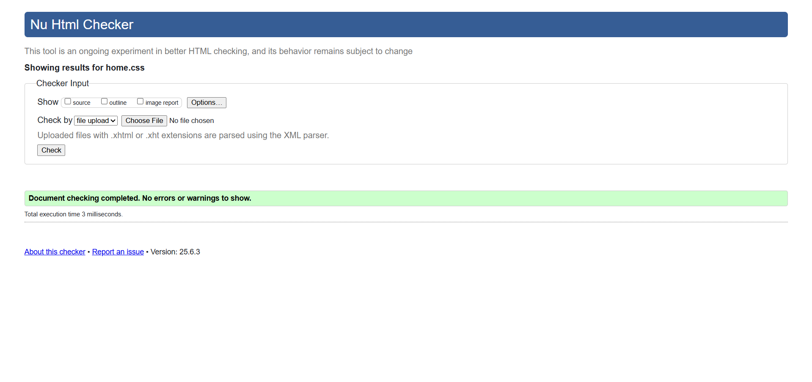
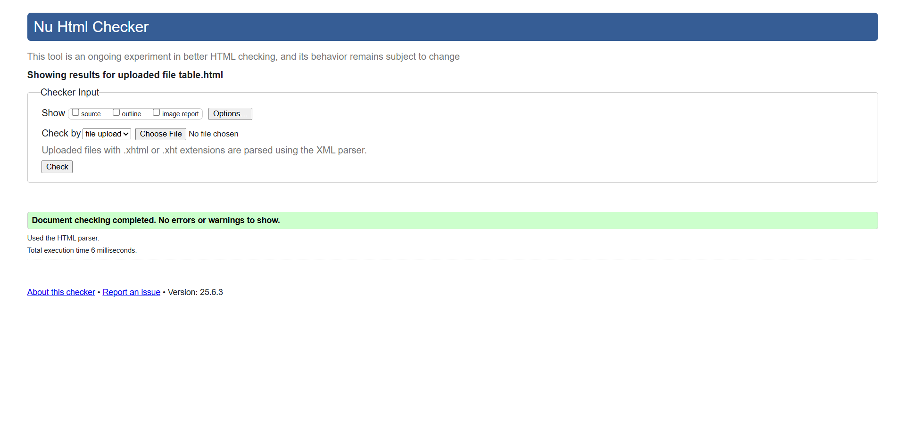
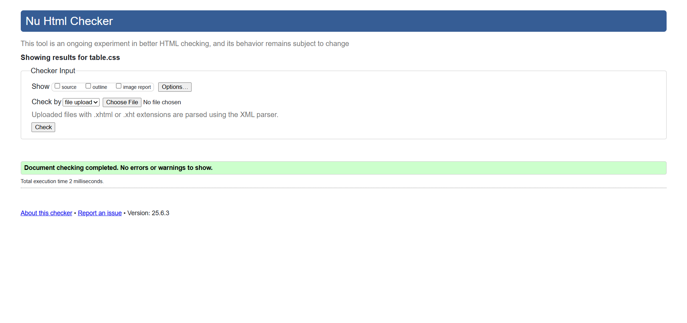

Home Page validation report
The homepage was validated using the W3C Markup Validation Service to ensure it adhered to modern HTML5 standards. Initially, the page contained minor issues such as unnecessary trailing slashes on void elements like "meta" and "img", and improper nesting of a "footer" element inside another "footer", which is not allowed in HTML. These issues were corrected by removing the self-closing slashes and restructuring the footer section to maintain proper tag hierarchy. Additionally, semantic elements and proper heading tags were reviewed to ensure accessibility and logical document structure. After making the necessary corrections, the homepage passed validation successfully with zero errors or warnings. This process enhanced the page’s overall code quality, browser compatibility, and accessibility, ensuring it meets web standards and provides a better experience for users.


Back to home Editor page
Table Page validation report
The table page was validated using the W3C Markup Validation Service to ensure compliance with HTML5 standards. Initially, the validator reported warnings about the possible misuse of "aria-label" attributes inside "td" elements, especially when used alongside icons for verification. These warnings were addressed by ensuring proper semantic structure and relying on clear visual and text-based indicators. Additionally, a missing heading inside the "section" element was flagged, which was resolved by adding an appropriate "h2" tag to improve accessibility and clarity. The nested "footer" issue was also fixed by keeping only one properly structured "footer" element. After making these adjustments, the table page passed validation without any critical errors, ensuring the page is semantically correct, accessible, and aligned with best practices in web development.


Back to Page Editor page
Content Page validation report
The content page was validated using the W3C Markup Validation Service to ensure proper HTML5 structure and accessibility. During the validation, some minor issues were identified, such as the incorrect use of the "br" tag with a closing slash () and unnecessary trailing slashes in self-closing tags like "meta" and "img". These were corrected by removing the invalid closing tags and trailing slashes to follow HTML5 standards. No critical structural or accessibility errors were found. After making the necessary corrections, the page passed the validation successfully, confirming that the content page is well-structured, accessible, and adheres to modern web development standards.